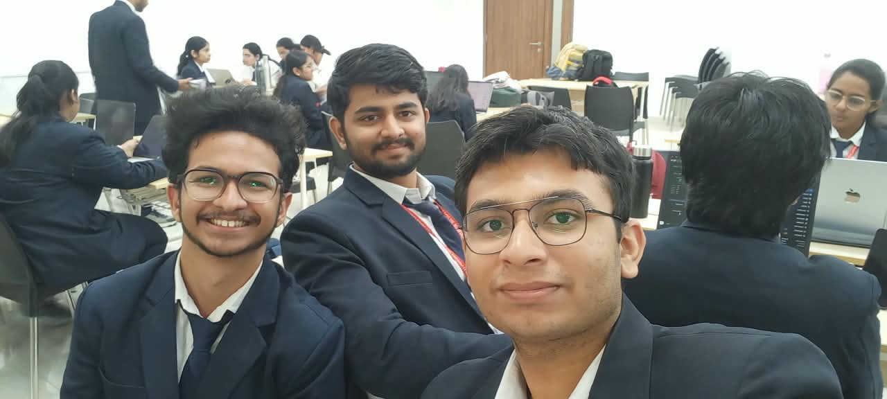
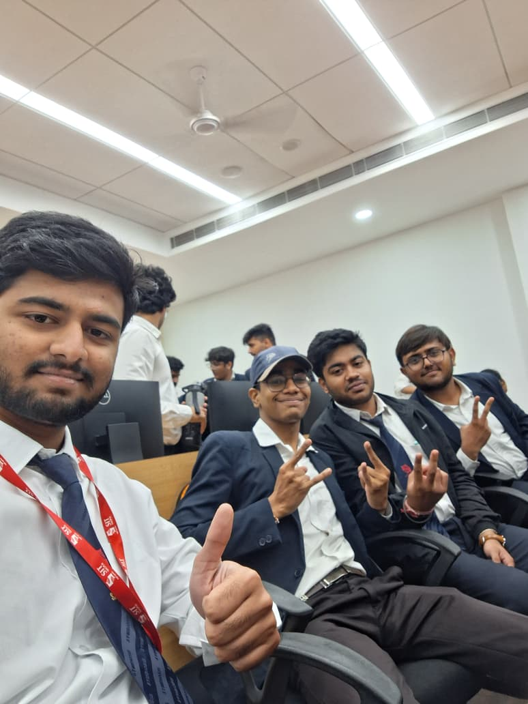
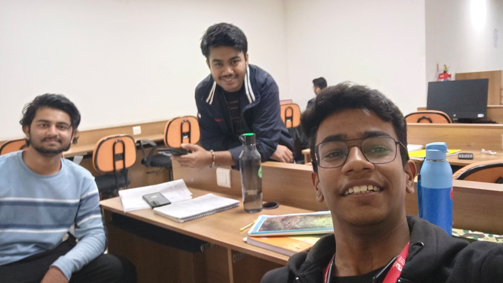
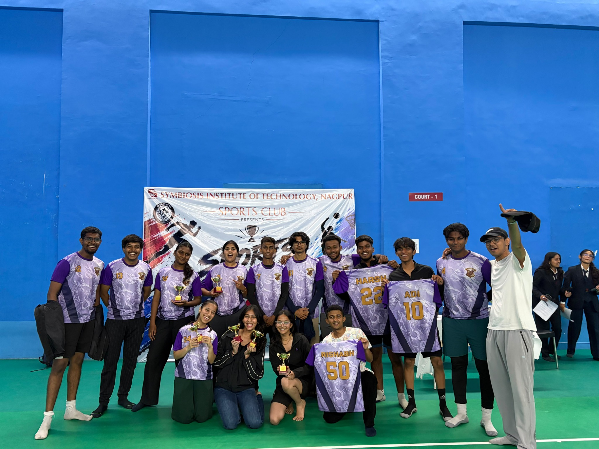

B.Tech in Computer Science & Engineering
Symbiosis Institute of Technology, Nagpur Campus
Symbiosis International (Deemed University)
AREA OF INTERESTArtificial Intelligence & Machine Learning
● COMPUTER SCIENCE · AI / ML
HELLO, WORLD — I'M
Building with curiosity.
Learning by creating.
B.Tech Computer Science student interested in artificial intelligence, machine learning, and software development. I turn ideas into practical projects, one experiment at a time.
01 / ABOUT ME
ABOUTI’m pursuing a Bachelor of Technology in Computer Science and Engineering, with an interest in AI and Machine Learning.
My learning journey includes Python, data analysis, machine learning models, and Java-based software development. Through projects, coursework, and hands-on experimentation, I’m building a stronger foundation in problem-solving and responsible technology development.
02 / EDUCATION
FOUNDATIONSSymbiosis Institute of Technology, Nagpur Campus
Symbiosis International (Deemed University)
Academic performance: verified semester-wise grades can be added when available. No marks or grades have been assumed.
03 / TOOLKIT
TOOLS I USEA snapshot of languages, libraries, and tools explored through learning and projects.
Skills reflect technologies explored; proficiency levels are not rated to avoid overstating experience.
04 / SELECTED WORK
CASE FILESLearning projects across machine learning, computer vision, and applied data science.
MACHINE LEARNING · 01
A text-classification project comparing machine learning models for identifying spam messages using TF-IDF features and a voting ensemble.
Explore GitHub ↗COMPUTER VISION · 02
An MRI image-classification project using EfficientNetB4 and Grad-CAM to explore predictions alongside visual explanations.
Explore GitHub ↗APPLIED ML · 03
A market-direction classification experiment using engineered technical indicators, leakage-aware evaluation, and a Streamlit dashboard.
Explore GitHub ↗Project links currently open your GitHub profile. Add exact repository links when available.
05 / EXPERIENCE & GROWTH
THE JOURNEYEducation, hands-on experience, and areas where I'm continuing to grow.
Completed a Java-based software development internship. Add exact responsibilities, deliverables, and a verified repository link before publishing.
Developing foundations in programming, computer science, and AI/ML through coursework and projects.
Practising data preparation, model comparison, computer vision, explainability, and model evaluation.
CERTIFICATES
ACHIEVEMENTS & CONTRIBUTIONS
Hands-on project development and technical learning. Add verified awards, hackathons, clubs, volunteering, or open-source contributions as applicable.
06 / GALLERY
REAL MOMENTSCollege life, teamwork, and moments outside the code editor.




07 / GET IN TOUCH
SAY HELLOI'm interested in learning, collaborating on meaningful projects, and exploring opportunities in software development and AI/ML.
Replace the LinkedIn URL and email placeholder with your personal details before publishing.